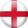
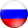
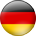
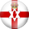
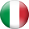
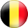
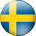
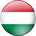
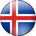
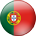

"Everything happens in France," wrote François de La Rochefoucauld. The junction between northern Europe and the south, sharing land borders with seven countries and in sight of another across La Manche, l'Hexagone has long been Europe's beating heart. Global philosophies, cultures and artistic movements have emerged from this great melting pot, but its attraction and openness has at times been its downfall – France has suffered as much war as it has debated peace.
Famous figures
Global culture, sport, science and politics can all detect distinct French watermarks. Charles de Gaulle spread republican ideals, while the message of free-thinking and romance was poetically disseminated by the likes of Victor Hugo, Jean-Jacques Rousseau, Voltaire and Jean-Paul Sartre. Painters (Paul Cézanne, Claude Monet), composers (Hector Berlioz, Maurice Ravel), architects (Louis Le Vau, Le Corbusier) – almost every strand of culture has a French accent. Likewise the world's great sporting events, the Olympics, FIFA World Cup, UEFA European Championship and UEFA Champions League, trace their lineage back to France.
Food
Where do you start? With bon appetit, perhaps, that staple phrase with no interest in being confined to the blue swathes on old maps that once signified France's empire. For its purpose it cannot be bettered and, in the stomachs of many, nor can French gastronomy. With such a vast range of climates and landscape, the larder is well-stocked; and from Jean Anthelme Brillat-Savarin to Paul Bocuse, it has benefited from writers, chefs and artists with an alchemist's touch. Foie gras, cassoulet, choucroute, bouillabaisse, andouillette – every locality has its specialities, its own interpretations.
Sport
Football is France's most popular sport, with around two million licensed players. Yet the country has a rich tradition in team sport generally – Les Bleus were runners-up at the 2011 IRB Rugby World Cup and are reigning men's Olympic handball champions. France also has a prolific production line of basketball players, cyclists and motorsport drivers, while tennis's French Open is one of four Grand Slam tournaments. The biggest annual sporting event is cycling's Tour de France, which attracts in the region of 12 million spectators.
Football
The birthplace of the world's three biggest football tournaments, France had to wait until 1984 to win one as Michel Platini's finals-record nine goals helped Les Bleus to UEFA European Championship glory. Zinédine Zidane was the talisman at the turn of the century, inspiring France to victory on home turf at the 1998 FIFA World Cup and then in the EURO two years later. Indeed they have been continental title holders in every age group while French clubs have triumphed in the men's and women's UEFA Champions Leagues.
Clubs
Elite French football remained amateur until 1932/33, but their clubs were up to speed by the advent of European football and Stade de Reims were runners-up to Real Madrid CF in the inaugural European Champion Clubs' Cup final. It was not until 1993 that a French side ruled Europe as Olympique de Marseille, traditional domestic powerhouses with AS Saint-Étienne, beat AC Milan. Olympique Lyonnais lifted seven successive titles at the start of the century, but more recently Ligue 1 has been noted for its competitiveness, with five different champions in as many seasons.
Situated in the south-west of the French capital, the Parc des Princes owes its name to its location on terrain used as a royal hunting ground in the 18th century.
The current stadium is the third to have been built on the site, the first opening its doors in 1897 and the second following in 1932.
The Parc des Princes was the finishing point of the Tour de France from 1903 to 1967; it also boasts a long history as an international rugby venue.
It has hosted six European club football finals, including the first ever European Champion Clubs' Cup showpiece in 1956 when Real Madrid CF beat Stade de Reims Champagne 4-3.
In addition to staging games at the 1938 and 1998 FIFA World Cups, the stadium was the venue for the 1960 and 1984 UEFA European Championships finals.
The first part of the renovation work being carried out was completed in summer 2014, with two new rows of seats added closer to the pitch, as well as new substitutes' benches and brand new executive boxes and lounges.
The renovation of the Parc des Princes, which improved services for the general public while also boosting the capacity to 45,000, was completed in 2015.
Constructed ahead of the 1998 FIFA World Cup, the Stade de France has hosted major events in football, rugby, athletics, motorsport and concerts from artists ranging from André Rieu to AC/DC.
The venue features movable seating, which can be retracted to uncover part of the athletics track, while the elliptical roof was designed to protect spectators while leaving the pitch uncovered.
It has the unique distinction of having hosted World Cup finals for football (France 3-0 Brazil, 1998) and rugby (South Africa 15-6 England, 2007).
The arena has staged two UEFA Champions League finals, Real Madrid CF's 3-0 win against Valencia CF in 2000 and FC Barcelona's 2-1 triumph over Arsenal FC six years later.
U2 held three dates of their U2 360° Tour at the Stade de France in 2009 and 2010, attracting an aggregate attendance of 283,084.
The construction of the €184m Stade de Bordeaux began at the start of 2013 and was completed just 26 months later, the stadium hosting its first game on the last weekend of the 2014/15 Ligue 1 season.
It has been designed by Swiss firm Herzog and de Meuron, the team behind Fußball Arena München, and features a 'floating' roof supported by 900 stanchions, designed to resemble local Landes-pine posts.
The effect is a venue which Bordeaux's mayor Alain Juppe described as "a piece of art which will enrich our cultural heritage" at the arena's inauguration in May 2015.
Located between a man-made lake and the Garonne river in north Bordeaux, it has replaced the Stade Chaban-Delmas – venue for games at the 1938 and 1998 FIFA World Cups – as home for the Girondins.
One of France's most iconic football landmarks, the ground was originally named after the former commercial director of the Lens Mining Company, Félix Bollaert.
The suffix Delelis was officially added in September 2012, a few days after the death of André Delelis – mayor of the city from 1966 to 1998, and a diehard supporter of the club.
Built by unemployed miners, the venue originally possessed an oval shape but began to take on a rectangular form when the first of four new stands was unveiled in 1976.
The stadium underwent renovation work and improvements ahead of both the 1984 UEFA European Championship and 1998 FIFA World Cup, and was also used during the 2007 Rugby World Cup. The rebuilding programme ahead of UEFA EURO 2016 will last until late 2015.
Stade Bollaert-Delelis holds the rare distinction of being able to accommodate almost the entire population of the town where it is located, with Lens home to around 36,000 inhabitants.
Located in the suburb of Villeneuve d'Ascq, 6km south-east of Lille city centre.
AS Nancy-Lorraine's Djamel Bakar scored the first goal at the venue on 17 August 2012, and although Salomon Kalou earned LOSC a point, Les Dogues mustered a solitary win in their first five home games there.
The stadium's first taste of international sport came on 17 November 2012 when France's rugby union side defeated Argentina 39-22.
The arena's retractable roof can be opened or closed in 30 minutes, while half of the pitch can be raised above the other for use in music performances and other sports.
Constructed by the company behind the Millau Viaduct in Aveyron, the capacity is more than double that of LOSC's previous homes, Stade Grimonprez-Jooris and Stadium Lille Métropole.
Located in the commune of Decines-Charpieu, 10km east of central Lyon, the stadium forms part of a complex stretched over 50 hectares and featuring a training ground for OL as well as hotels and office buildings.
Constructed under the project name Grand Stade OL, the finished venue consists of three tiers.
"A dream will come true for all the people of Lyon," said Lyon's mayor Gérard Collomb as club president Jean-Michel Aulas laid the foundation stone in November 2013.
The arena replaced the Stade de Gerland, Lyon's home since 1950 and among seven venues for the 1984 UEFA European Championship, hosting Denmark's 5-0 group stage win against Yugoslavia and their semi-final loss on penalties to Spain.
The Stade de Gerland was also a venue for the 1998 FIFA World Cup, staging Croatia's 3-0 quarter-final victory over Germany.
The stadium staged its first game on 9 January 2016, when Olympique Lyonnais beat Troyes 4-1 in Ligue 1.
Famously open to the elements in the past, the renovated stadium now features a roof. The estimated €267m makeover was carried out with the team still playing matches there, and was completed in September 2014.
On 16 October 2014, the new Vélodrome was inaugurated by the mayor of Marseille, Jean-Claude Gaudin, joined by UEFA's operations director, Martin Kallen, two members of the French government – sports minister Patrick Kanner and secretary of state for sports Thierry Braillard – and Martin Bouygues, CEO of Bouygues Group.
The Stade Vélodrome opened its doors to visitors on the last weekend of October 2014 – 55,000 people headed down to the stadium and were able to visit the behind-the-scenes areas, the roof and the pitch.
As its name suggests, Stade Vélodrome possessed a cycling track when it first opened in 1937, though the new venue's opening ceremony was capped by a football match between Marseille and Italian side Torino FC.
The stadium has also hosted sports as varied as athletics, rugby, boxing, tennis, hockey and even motorsports, though its days as an all-purpose arena ended when the cycling track was finally removed in 1985.
Stade Vélodrome staged matches at the 1938 and 1998 FIFA World Cups, with its capacity increased to 60,000 for the latter tournament; it also hosted games at the 1960 and 1984 UEFA European Championships.
Located in the south of the city, on the north bank of the Huveaune river, the Vélodrome has regularly been used as a concert venue since the 1980s and has also hosted political rallies.
Plans for a new venue were first mooted around the start of the century, but construction of the Stade de Nice, located in Saint-Isidore near the Var river, did not get under way until 2011.
The ecofriendly arena threw open its doors for OGC Nice's 4-0 Ligue 1 win against Valenciennes FC on 22 September 2013. The crowds descended on the stadium over four hours before kick-off, with the four stands – Garibaldi, Ray, Ségurane and Sud – being officially inaugurated with a spectacular pyrotechnic display.
Drawing over three times its own energy requirements from more than 4,000 solar panels, and with its own geothermal installation for heating, it uses rain water channelled from the stadium roof into four collection reservoirs for pitch watering.
He sixth largest football stadium in France also houses the Musée National du Sport (National Sport Museum), which moved to the Côte d'Azur from Paris and was officially inaugurated on 15 October 2014 in the company of the French sports minister, Patrick Kanner. More than 45,000 pieces and 400,000 documents, comprising one of the largest collections in the world, are now on show in the venue designed by Jean-Michel Wilmotte.
The arena will likewise host rugby games, concerts and various other events with congress facilities also available to ensure 24/7 exploitation of the premises, located just 6km from France's fifth-biggest city's airport and within a 15-minute drive of the city centre.
Known affectionately as Le Chaudron (the Cauldron) due to its reputation for atmosphere, the stadium is named after the founder of the Casino retail chain, under whose auspices AS Saint-Étienne originally came into being.
Situated to the north of the city centre, the ground was built on old mine tunnels and next to a steel factory, and in the early days, fumes from the plant's chimneys were known to drift across the pitch.
The stadium originally incorporated an athletics track, though this was removed in 1956 ahead of rebuilding work that moved supporters closer to the action.
The venue, host to the 2015 Match of Poverty, staged matches at the 1984 UEFA European Championship, 1998 FIFA World Cup and 2007 Rugby World Cup, undergoing renovation work in the run-up to each tournament.
Famed in the past for an 'English-style' design due to its four separate stands, the ground has had a facelift and enlarged its capacity to 41,500 while also making the venue more eco-friendly. The work was done with AS Saint-Étienne in situ and was completed in late 2014.
Situated on an island in the heart of Toulouse, the stadium was built specifically for the 1938 FIFA World Cup and was soon labelled 'mini Wembley' because of its resemblance to the iconic London venue.
The biggest ground in the Midi-Pyrenees region, the stadium underwent considerable renovations in 1949 and 1997, the latter work coming ahead of the 1998 World Cup when it hosted six matches. Upgrade work was then undertaken for UEFA EURO 2016, with the venue reopening in January 2016.
The arena has witnessed many of Toulouse's finest moments, including a UEFA Cup first round victory against SSC Napoli in October 1986, when Diego Maradona fired against the post during the penalty shoot-out.
The stadium was damaged and required extensive repair efforts after a nearby chemical plant suffered a major explosion in 2001.
In addition to football, the ground regularly holds rugby matches, and was a venue for the 2007 Rugby World Cup.
| Country | Played | Won | Draw | Lost | Point | |
 |
France | 3 | 2 | 1 | 0 | 7 |
| Switzerland | 3 | 1 | 2 | 0 | 5 | |
 |
Albania | 3 | 1 | 0 | 2 | 3 |
| Romania | 3 | 0 | 1 | 2 | 1 |
| Country | Played | Won | Draw | Lost | Point | |
| Wales | 3 | 2 | 0 | 1 | 6 | |
|  | England | 3 | 1 | 2 | 0 | 5 |
| Slovakia | 3 | 1 | 1 | 1 | 4 | |
|  | Russia | 3 | 0 | 1 | 2 | 1 |
| Country | Played | Won | Draw | Lost | Point | |
|  | Germany | 3 | 2 | 1 | 0 | 7 |
| Poland | 3 | 2 | 1 | 0 | 7 | |
|  | Northern Ireland | 3 | 1 | 0 | 2 | 3 |
| Ukraine | 3 | 0 | 0 | 3 | 0 |
| Country | Played | Won | Draw | Lost | Point | |
| Croatia | 3 | 2 | 1 | 0 | 7 | |
| Spain | 3 | 2 | 0 | 1 | 6 | |
 |
Turkey | 3 | 1 | 0 | 2 | 3 |
| Czech Republic | 3 | 0 | 1 | 2 | 1 |
| Country | Played | Won | Draw | Lost | Point | |
|  | Italy | 3 | 2 | 0 | 1 | 6 |
|  | Belgium | 3 | 2 | 0 | 1 | 6 |
| Republic of Ireland | 3 | 1 | 1 | 1 | 4 | |
|  | Sweden | 3 | 0 | 1 | 2 | 1 |
| Country | Played | Won | Draw | Lost | Point | |
|  | Hungary | 3 | 1 | 2 | 0 | 5 |
|  | Iceland | 3 | 1 | 2 | 0 | 5 |
|  | Portugal | 3 | 0 | 3 | 0 | 3 |
| Austria | 3 | 0 | 1 | 2 | 1 |
Test project "Euro 2016 in France" for RiverSoft©